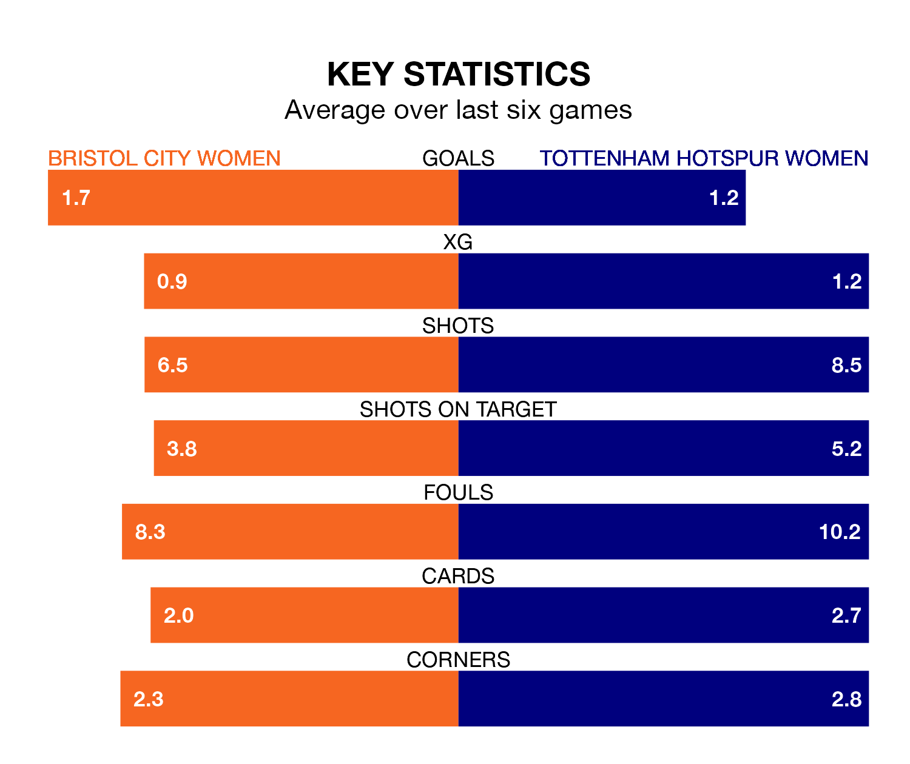

Tottenham Hotspur Women are strong favourites to take all three points despite Bristol City Women's home advantage in Sunday's early match at Robins High Performance Centre.
*Betting Company* are offering odds of 1.46 on Tottenham Hotspur sealing the win, with the visitors sitting sixth in the FA Women's Super League table.
Bristol City, who are 12th in the league and 16 points behind Spurs, are priced at 5.2 to win. A draw is set at 4.3.
Bristol City are in terrible form in the FA Women's Super League, with no wins and a draw from their last six games.
With two wins and a draw over that period, Tottenham Hotspur's form is much better – they have taken seven points from 18, compared to the Robins' one.
In the last 10 years, Bristol City and Tottenham Hotspur have played each other on six occasions. Tottenham Hotspur won four of them and they drew twice.
On average, the Robins scored 0.8 goals and Spurs 2.2 in those matches.
Their last meeting was on November 22, when Tottenham Hotspur won 3-0 at home.
With 20 goals in 16 games so far this season, the hosts are the league's third-lowest scorers with 1.2 goals per game. And they are conceding more than average, letting in 47 goals at a rate of 2.9 per game.
Spurs are also below average scorers, with 1.4 goals per game, compared to a league average of 1.7. They have conceded 1.8 goals per game.
Bristol City's last match was on March 17, a 2-0 loss against Manchester United Women.
Tottenham Hotspur beat Leicester City WFC 1-0 last time out, also on March 17, with Matilda Vinberg on the scoresheet.
Updated: 10:19 (UTC), 22/03/24